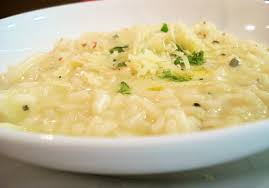
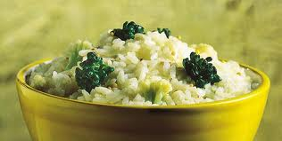

Risotos
- 
- Risoto de Quatro Queijos
- Risoto de gorgonzola, parmesão, catupiry e mussarela.
- Autor: Giovanni Ribeiro
- Avaliação: 4
- 68 pessoas avaliaram essa receita
- 
- Risoto de Brócolis
- Delicioso risoto com brócolis. Fácil e rápido de fazer!
- Autor: Claudia Martins
- Avaliação: 4
- 82 pessoas avaliaram essa receita